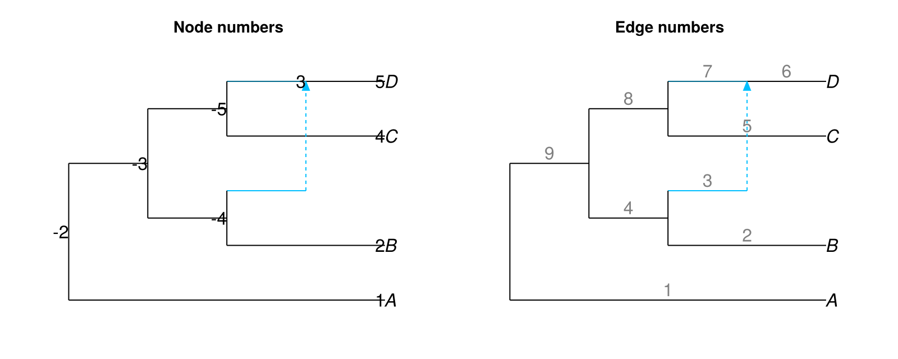
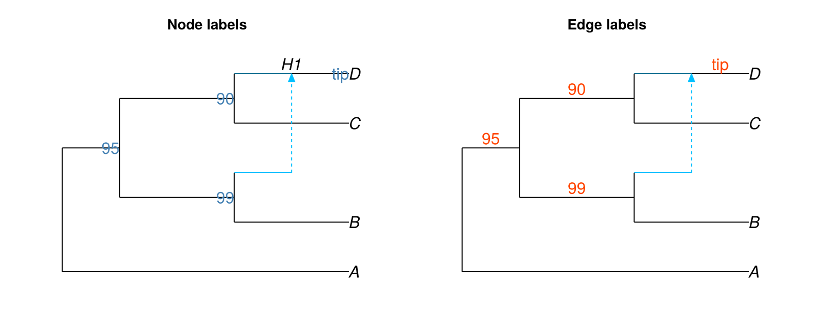
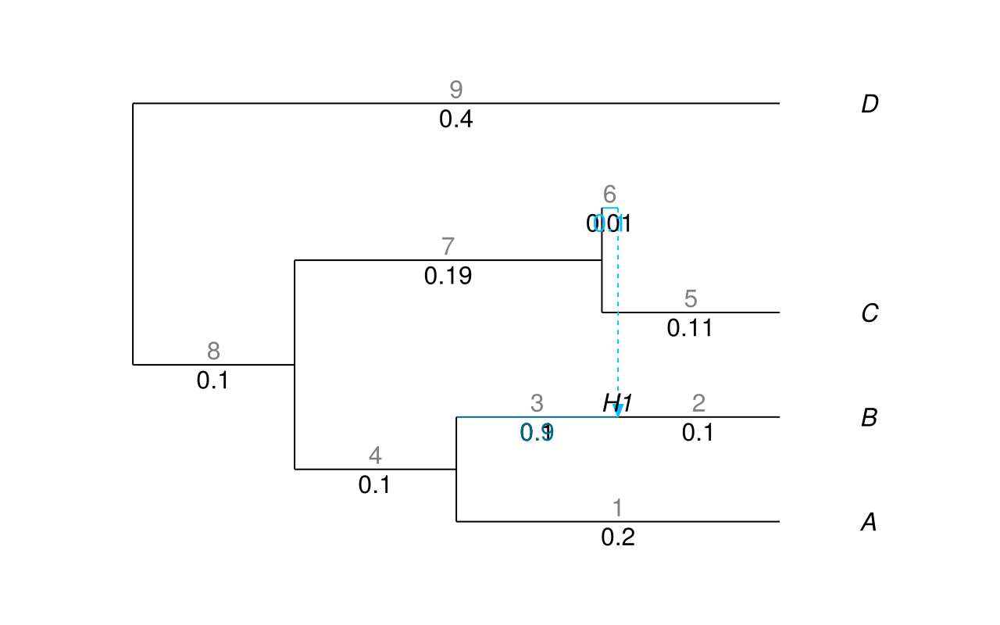
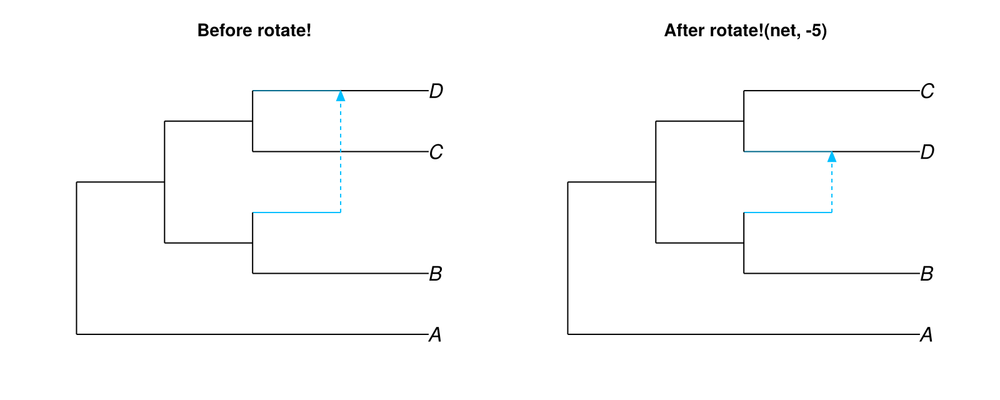

Annotations
Finding node and edge numbers
Most annotation attributes are keyed on node or edge numbers assigned by PhyloNetworks. Set shownodenumber = true or showedgenumber = true to render these numbers on the plot.
Edge numbers are rendered in grey by default (attribute edgenumbercolor, default "grey") to distinguish them from edge lengths.
net = PhyloNetworks.readnewick(
"(A:2.5,((B:1,#H1:0.5::0.1):1,(C:1,(D:0.5)#H1:0.5::0.9):1):0.5);",
)
figure = Figure(size = (800, 320))
ax1 = Axis(figure[1, 1], title = "Node numbers")
ax2 = Axis(figure[1, 2], title = "Edge numbers")
hidedecorations!(ax1); hidespines!(ax1)
hidedecorations!(ax2); hidespines!(ax2)
plot!(ax1, net; shownodenumber = true)
plot!(ax2, net; showedgenumber = true)
figure
Node and edge label DataFrames
Pass a DataFrame to nodelabel or edgelabel to attach custom text to specific nodes or edges.
The DataFrame must satisfy two requirements:
- The first column must contain
Intvalues matching node or edge numbers in the network. Rows whose first-column value ismissingare silently dropped. Rows whose number is not found in the network generate a warning but do not cause an error. - The second column holds the label text. Column names are ignored; only column position matters.
AbstractFloatvalues in the second column are formatted to 3 significant figures.
net = PhyloNetworks.readnewick(
"(A:2.5,((B:1,#H1:0.5::0.1):1,(C:1,(D:0.5)#H1:0.5::0.9):1):0.5);",
)
nodelabel = DataFrames.DataFrame(
node = [-5, -3, -4, 5],
label = ["90", "95", "99", "tip"],
)
edgelabel = DataFrames.DataFrame(
edge = [8, 9, 4, 6],
label = ["90", "95", "99", "tip"],
)
figure = Figure(size = (800, 320))
ax1 = Axis(figure[1, 1], title = "Node labels")
ax2 = Axis(figure[1, 2], title = "Edge labels")
hidedecorations!(ax1); hidespines!(ax1)
hidedecorations!(ax2); hidespines!(ax2)
plot!(ax1, net; useedgelength = true, nodelabel = nodelabel,
shownodelabel = true, nodelabelcolor = "steelblue")
plot!(ax2, net; useedgelength = true, edgelabel = edgelabel,
edgelabelcolor = "orangered")
figure
Built-in annotation flags
The following boolean attributes toggle built-in text layers. All default to false except showtiplabel, which defaults to true.
| Attribute | Renders |
|---|---|
showtiplabel | Tip (leaf) names |
shownodelabel | Internal node names |
shownodenumber | Node numbers for all nodes |
showedgelength | Edge lengths (blank when missing) |
showedgenumber | Edge numbers |
showgamma | Gamma (inheritance) values on hybrid edges |
The example below enables several flags together on a network with edge lengths and gamma values.
net = PhyloNetworks.readnewick(
"(((A:.2,(B:.1)#H1:.1::0.9):.1,(C:.11,#H1:.01::0.1):.19):.1,D:.4);",
)
figure = Figure(size = (640, 400))
ax = Axis(figure[1, 1])
hidedecorations!(ax); hidespines!(ax)
plot!(
ax, net;
useedgelength = true,
style = :fulltree,
shownodelabel = true,
showedgelength = true,
showedgenumber = true,
showgamma = true,
tipoffset = 0.05,
)
figure
Sizing and color
Text size for each layer is controlled by a scale factor relative to the default size.
| Attribute | Applies to |
|---|---|
tipcex | Tip labels |
nodecex | Node labels and node numbers |
edgecex | Edge labels, edge lengths, edge numbers, and gamma text |
Color attributes follow the same layer grouping: nodelabelcolor, edgelabelcolor, edgenumbercolor, nodelabeladj, edgelabeladj. tipoffset shifts tip labels to the right of the tip node along the x-axis, which is useful when labels would otherwise overlap arrow tips.
Untangling
When hybrid edges cross over unrelated lineages the network can be difficult to read. Use shownodenumber = true to identify the internal node whose child edges should be reordered, then call PhyloNetworks.rotate! on the network before plotting.
net_tangled = PhyloNetworks.readnewick("(A,((B,#H1),(C,(D)#H1)));")
net_untangled = PhyloNetworks.readnewick("(A,((B,#H1),(C,(D)#H1)));")
PhyloNetworks.rotate!(net_untangled, -5)
figure = Figure(size = (800, 320))
ax1 = Axis(figure[1, 1], title = "Before rotate!")
ax2 = Axis(figure[1, 2], title = "After rotate!(net, -5)")
hidedecorations!(ax1); hidespines!(ax1)
hidedecorations!(ax2); hidespines!(ax2)
plot!(ax1, net_tangled)
plot!(ax2, net_untangled)
figure
rotate! is a PhyloNetworks operation. See the PhyloNetworks documentation for full details on rotate! and directionalpreorder!.